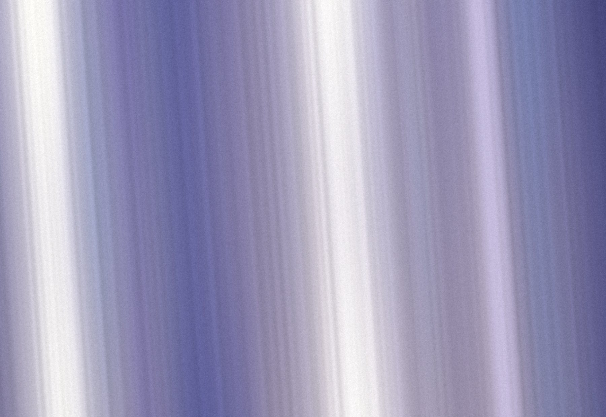
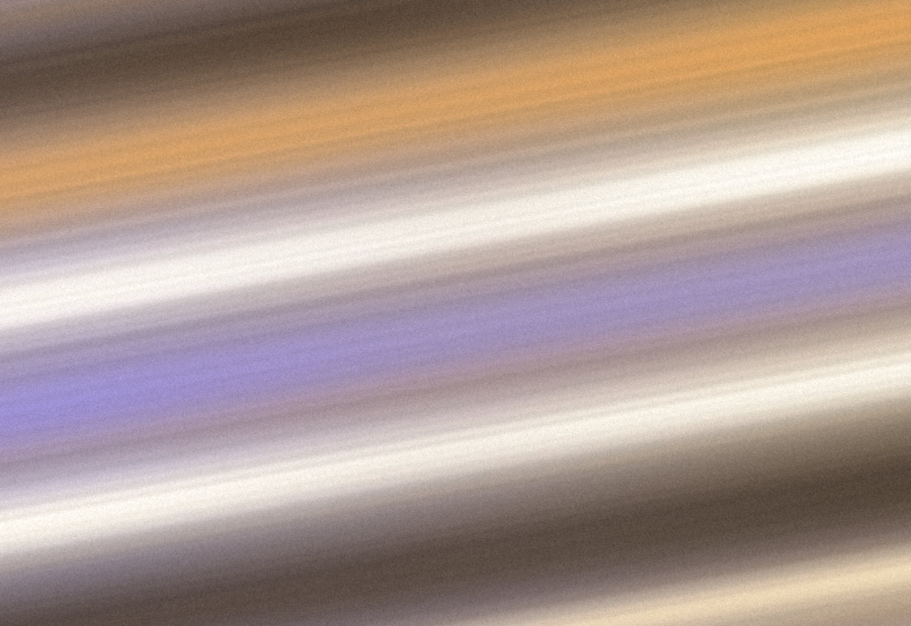
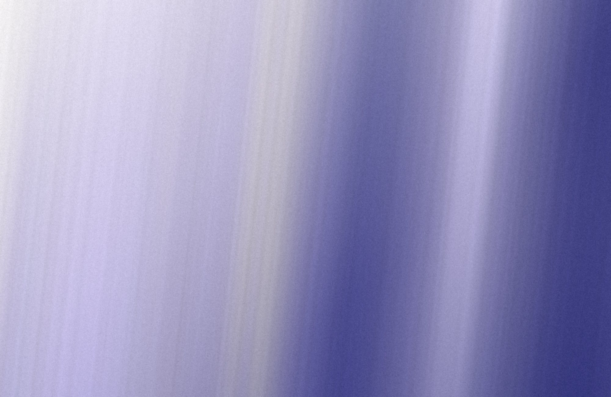
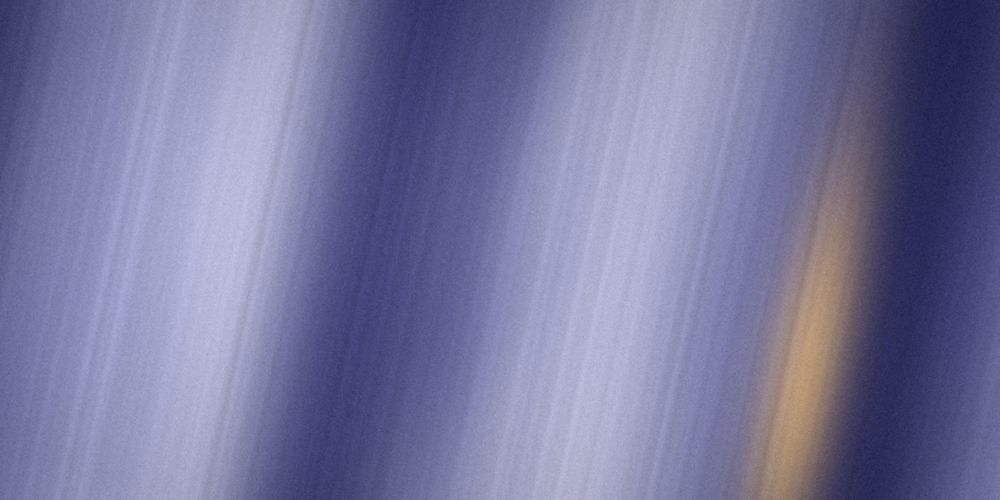

On Reading Well
Good readers are . They don’t stop at every word. They at its meaning and keep the of the argument . Over time, these small add up. Each new word stays in a sentence they actually read.
把指针移到虚线单词上。点一下虚线单词。 在 Mac 上是指向单词后轻按 ⌥。卡片为预置示例。
知译 Zhiyi · Mac 阅读助手
查词的事，交给知译。
示例已查 resilient · 有韧性的已查 thread · 思路，脉络已查 novel · 新颖的已框选两栏英文 · 整理成段落再翻译已加入生词本 · intact
Mac 版即将开放
网页、PDF、App 界面、图片里的文字，指向就能翻。不用复制，也不用切换窗口。
下面是一段示例文章。把指针移到虚线单词上，看看知译的取词卡片。

Good readers are . They don’t stop at every word. They at its meaning and keep the of the argument . Over time, these small add up. Each new word stays in a sentence they actually read.
把指针移到虚线单词上。点一下虚线单词。 在 Mac 上是指向单词后轻按 ⌥。卡片为预置示例。
resilient
语境释义
adj.有韧性的
受到打击后能很快恢复的
形容读者碰到生词不慌，很快就能回到阅读里。
词典
Oxford 英汉词典 · macOSadj.有弹性的
adj.适应能力强的
Good readers are resilient.
会读书的人有韧性。
其他常见义项
unfamiliar
语境释义
adj.陌生的
没见过、还不认识的
unfamiliar word 就是生词，指读者还不认识的词。
词典
Oxford 英汉词典 · macOSadj.(strange, unusual) 陌生的；不常见的
adj.(without working knowledge) 无经验的
They don’t stop at every unfamiliar word.
他们不会在每个生词前都停下来。
其他常见义项
glance
语境释义
v.扫一眼
很快地看一下
glance at its meaning 指快速看一眼词义，不停下来细查。
词典
Oxford 英汉词典 · macOSn.一瞥
vi.(look) 匆匆一看
更多释义
They glance at its meaning and keep the thread of the argument intact.
他们扫一眼词义，论证的思路始终没断。
其他常见义项
thread
语境释义
n.思路，脉络
论证一步步展开的线索
thread of the argument 指论证的思路，不是缝衣线。
词典
Oxford 英汉词典 · macOSn.(string) 线
n.(theme of argument, story) 脉络
更多释义
They glance at its meaning and keep the thread of the argument intact.
他们扫一眼词义，论证的思路始终没断。
其他常见义项
intact
语境释义
adj.完整的，没断的
保持完整，不被打断
keep … intact 指让思路保持完整，不被查词打断。
词典
Oxford 英汉词典 · macOSadj.完好无损的；未受损害的
They glance at its meaning and keep the thread of the argument intact.
他们扫一眼词义，论证的思路始终没断。
其他常见义项
detours
← detour语境释义
n.小小的绕行
偏离主线的一小段路
把扫一眼生词，比作阅读途中绕了一小段路。
词典
Oxford 英汉词典 · macOSn.绕行
vi.绕道
更多释义
Over time, these small detours add up.
日积月累，这些小小的绕行会积少成多。
其他常见义项
anchored
← anchor语境释义
v.扎根于，固定在
牢牢地连在某处
anchored in a sentence 指新词和那句话牢牢连在一起。
词典
Oxford 英汉词典 · macOSn.(Nautical) 锚
n.(source of stability) 精神支柱
更多释义
Each new word stays anchored in a sentence they actually read.
每个新词，都扎根在他们真正读过的一句话里。
其他常见义项
四种取词
单词、整段、选中的文字，或者你自己输入的一句话，都有对应的快捷键。
01 · 悬停取词
音标、词性和词典释义即时显示，知译 AI 再补上这个词在这句话里的意思。
anchored
← anchor语境释义
v.扎根于，固定在
牢牢地连在某处
anchored in a sentence 指新词和那句话牢牢连在一起。
Each new word stays anchored in a sentence they actually read.
每个新词，都扎根在他们真正读过的一句话里。
02 · 框选翻译
截图在本机识别。折行、分栏会先整理成通顺的段落，再翻译。
Reading in a second lan-
guage is slow at first:
every unfamiliar word
is a small detour.
With practice the de-
tours grow shorter, and
the page starts to read
like your own language.
示例：一页两栏排版的英文，行尾有断词连字符。
用第二语言阅读，起初会很慢：每个生词都是一次小小的绕行。
练得多了，绕行越来越短，读起来渐渐像母语一样。
原文
Reading in a second language is slow at first: every unfamiliar word is a small detour.
With practice the detours grow shorter, and the page starts to read like your own language.
03 · 选中翻译
在任意 App 里选中一段文字，直接翻译，不用复制粘贴。

他们扫一眼词义，论证的思路始终没断。
原文
04 · 输入翻译
打开输入窗，输入或粘贴文字，按 Return 翻译。
每个新词，都扎根在他们真正读过的一句话里。
快捷键都可以在设置里修改，也能一键恢复默认。
AI 语境释义
词典把义项都列出来，知译 AI 读完整句话，告诉你这里是哪一个，再说清为什么。

1选一个词
示例 · 预置内容
模型？型号？还是样板？
论文里的 novel 不是小说
问题、期刊，还是发行？
统计里的 bias 是偏差
Table 2 不是第二张桌子
从核桃到操作系统
2再点一句话
model
novel
issue
bias
table
kernel
语境释义
AI知译 AIn.模型
用数据训练出的数学模型
为什么trained … on data 说明是机器学习里的模型，不是实物模型。
n.型号，新款
产品的一个款式
为什么lighter、lasts longer 说的是产品，指新款型号。
n.样板，榜样
值得别人效仿的例子
为什么a model for others 指供别处效仿的样板。
adj.新颖的，新的
以前没有的、新提出的
为什么论文里 a novel method 指新提出的方法，不是「小说」。
n.小说
一部长篇小说
为什么finished the novel（读完了小说）说明这里指一本书。
n.（刊物的）一期
期刊或杂志的某一期
为什么ran in the March issue 指文章登在三月号上。
n.问题
需要面对和解决的事
为什么became a real issue 指噪音成了需要解决的问题。
n.发行
（钱币、邮票等）正式发行
为什么issue of the new coins 指硬币的发行，不是「问题」。
n.偏差
统计结果的系统性偏离
为什么说的是调查样本偏向年轻人，属于统计上的偏差。
n.偏见
不公正的看法
为什么without bias 指审稿时不带偏见、公平地看。
n.斜纹（斜裁）
与布料纹理成斜角的方向
为什么裁缝用语：cut on the bias 指沿布料斜纹方向裁剪。
n.表格
列出数据的表
为什么Table 2 是文中表格的编号，不是桌子。
n.一桌人
围坐在一张桌边的人
为什么the whole table 指同桌的所有人，不是桌子。
n.积分榜
比赛的名次表
为什么league table 是体育用语，指联赛的积分榜。
n.内核
操作系统的核心部分
为什么和 install、driver 一起出现，指操作系统的内核。
n.（一点）核心
其中真实的那一小部分
为什么a kernel of truth 是固定说法，指里面有几分真实。
n.果仁
坚果壳里能吃的部分
为什么crack the walnut 说明是坚果，kernel 指里面的仁。
We trained the model on ten years of weather data.
整句译文
我们用十年的气象数据训练了这个模型。
The new model is lighter and lasts longer on a charge.
整句译文
新款更轻，充一次电也用得更久。
The town’s reading program is now a model for others.
整句译文
这个镇的阅读计划，如今成了别处效仿的样板。
We propose a novel method for aligning speech with text.
整句译文
我们提出了一种把语音与文本对齐的新方法。
She finished the novel on a long train ride.
整句译文
她在一趟长途火车上读完了那本小说。
Her essay on sleep ran in the March issue.
整句译文
她那篇关于睡眠的文章，刊登在三月号上。
Noise became a real issue after the new road opened.
整句译文
新路通车后，噪音成了一个实实在在的问题。
The issue of the new coins was delayed until spring.
整句译文
新硬币的发行推迟到了春天。
Online surveys can introduce a bias toward younger users.
整句译文
网络问卷可能让样本偏向年轻用户，造成偏差。
Good reviewers read a paper without bias.
整句译文
好的审稿人读论文时不带偏见。
The scarf is cut on the bias, so it drapes well.
整句译文
这条围巾是斜裁的，所以垂感很好。
Table 2 compares the three methods.
整句译文
表 2 比较了这三种方法。
By the second toast, the whole table was singing.
整句译文
第二次举杯时，满桌的人都唱了起来。
The team climbed to third in the league table.
整句译文
球队在积分榜上升到了第三。
Update the kernel before you install the new driver.
整句译文
安装新驱动之前，先更新内核。
There is a kernel of truth in the old story.
整句译文
这个老故事里有几分真实。
Crack the walnut and pick out the kernel.
整句译文
敲开核桃，把核桃仁挑出来。
词典 这句里的意思
Oxford 英汉词典 · macOS知译 AI 结合所在的句子和附近的上下文，判断这个词在这里的意思。
一两句话讲明依据，比如搭配、语境或领域。
词典义项照常列出，可以对照。AI 释义也可能出错。
示例为预置内容，不实时调用 AI。词典义项摘自 macOS 自带的 Oxford 英汉词典，按 App 卡片的方式列出前 6 项。点句子后高亮对应义项是网页演示；在 App 的取词卡片里，语境释义显示在词典义项上方。
生词本与复习
一键收藏，连同原句一起保存。到期的词按遗忘曲线排好，也可以导出到 Anki。
取词卡片上点「加入生词本」，单词、释义和原句一起保存。
先回想，再显示释义。记住了，下次的间隔就拉长一些。
生成 Anki 牌组，也可以导出 CSV 或不背单词词表。
AI 服务
邮箱登录后就能用内置的知译 AI，不用自己申请密钥。想用别的服务，付费方案可以填自己的 API 密钥。
由 DeepSeek 提供。邮箱登录后即可使用，不用申请密钥。文字经我们的服务器转发给 DeepSeek，服务器不保存、不记录翻译文字。
免费，在本机完成，不用登录，所有方案不限次数。没有登录或知译 AI 额度用完时，会自动改用它。
每个服务的密钥单独保存在本机钥匙串，不同步。文字用你自己的密钥直接发给你选的服务商，不经过我们的服务器。
国内服务
海外服务
本机与自定义
方案与价格
所有方案都包含 Apple 翻译、系统词典、生词本、复习和 Anki 导出。
新用户先免费体验 7 天，之后每日少量知译 AI。
适合每天阅读，并可接入自己的 API。
额度约为标准版的 2.5 倍，适合大量阅读。
一次买断，用自己的 API，知译 AI 同免费版。
在小红书搜索「知译」，私信购买兑换码。
输入邮箱，填写收到的 6 位验证码，不用设密码。
粘贴兑换码，方案开通到你的账号。兑换码只能用一次，请勿公开分享。
常见问题
词典、文字识别和 Apple 翻译在本机完成；只有使用 AI 大模型时需要联网。Apple 翻译初次用某种语言时，系统可能会先下载语言包。
词典释义适用于英译中，使用 macOS 自带的牛津英汉词典（如未下载，可在「词典」App 设置中勾选）。
不需要。内置的知译 AI（DeepSeek）用邮箱登录就能用，不用自己申请密钥；付费方案还可以填自己的密钥。
Apple 翻译、系统词典和生词本不用登录。使用内置的知译 AI、兑换付费方案时，用邮箱登录，不设密码；新用户首次登录可获 7 天体验。
Apple Silicon（M 系列芯片）的 Mac，macOS 26 或以上。
在小红书搜索「知译」，私信购买兑换码。在 App 里用邮箱登录，打开「账号与套餐」，粘贴兑换码即可开通。
每个账号可同时在 2 台 Mac 上登录。换电脑时，在旧电脑上退出登录即可；旧电脑不在手边，也可以在新电脑登录时移除一台旧设备（从其他设备移除，每月可操作 3 次）。遇到问题请联系 [邮箱 / 微信]。
App 里用一个小圆环显示本期用量，不显示次数。指针放上去可以看到百分比和重置时间。额度用完会自动改用 Apple 翻译，卡片上会出现「查看方案」。
「辅助功能」用于响应快捷键、读取选中的文字；「屏幕录制」用于截取指针附近的文字。在 App 里点「打开系统设置…」即可跳转。
从菜单栏打开「输入翻译…」不需要这两项权限；全局快捷键（包括 ⌥I）需要「辅助功能」。
截图只在本机内存中识别，不保存到磁盘，也不上传。使用知译 AI 时，识别出的文字和附近的上下文会经我们的服务器转发给 DeepSeek，服务器不保存、不记录翻译文字。详见隐私政策。
[退款规则]
